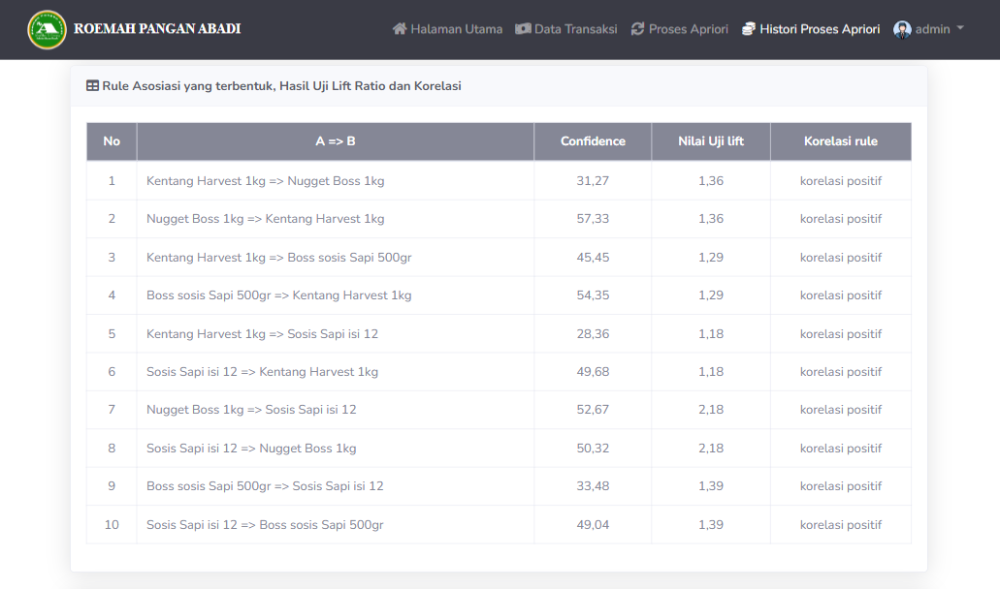
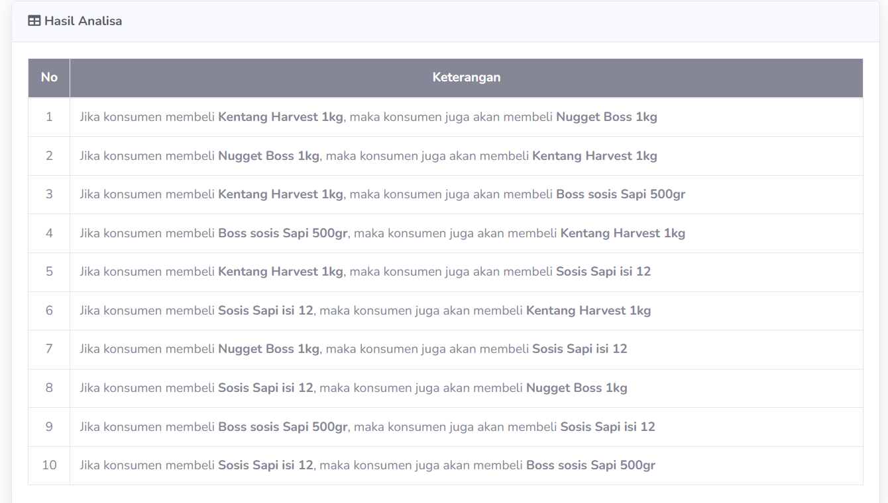

Data Science Project
Sistem Market Basket Analysis ini dirancang untuk membantu pemilik bisnis dalam menganalisis pola pembelian konsumen berdasarkan data transaksi penjualan. Dalam bisnis ritel, memahami pola pembelian konsumen sangat penting untuk strategi pemasaran dan peningkatan penjualan. Proyek ini mengembangkan sistem berbasis web menggunakan PHP yang memanfaatkan algoritma Apriori untuk melakukan analisis asosiasi pada data transaksi penjualan. Tujuan utama sistem ini adalah mengidentifikasi kombinasi produk yang sering dibeli bersamaan (market basket analysis) guna memberikan rekomendasi strategi bisnis yang lebih tepat sasaran.
Fitur utama meliputi Data Transaksi untuk melihat daftar data transaksi dan juga fitur Edit, Delete, Input & Upload Data Transaksi dengan Format csv & xls. Fitur Proses Apriori untuk Analisis & Modelling Algoritma Apriori, Dengan menentukan rentang tanggal transaksi, nilai minimum support & minimum confidence yang ingin dianalisis, Fitur tampilan metrik analasis apriori beserta Dashboard Hasil Analisis. Fitur History Proses Apriori yang menampilkan riwayat analisis yang telah dilakukaan, yang dapat dilakukan View, Print(pdf), Delete.
Proyek ini merupakan implementasi dari algoritma Apriori dalam bentuk aplikasi web. Pengguna dapat mengunggah file transaksi penjualan dan menerima hasil analisis dalam bentuk aturan asosiasi beserta metrik evaluasi seperti support, confidence, dan lift, dan dashboard hasil analisis dalam bentuk tabel. Sistem ini cocok diterapkan pada bisnis ritel yang ingin memahami perilaku pelanggan dan meningkatkan efisiensi strategi penjualan.
Memahami kebutuhan bisnis untuk menemukan pola pembelian dan meningkatkan strategi pemasaran
Mengunpulkan, memilih dan membersihkan data transaksi dalam format .xls agar siap diproses
Menerapkan algoritma Apriori menggunakan bahasa pemrograman PHP
Menampilkan hasil analisis dalam bentuk tabel pada dashboard berbasis web.
Web dihosting secara lokal dengan XAMPP.

